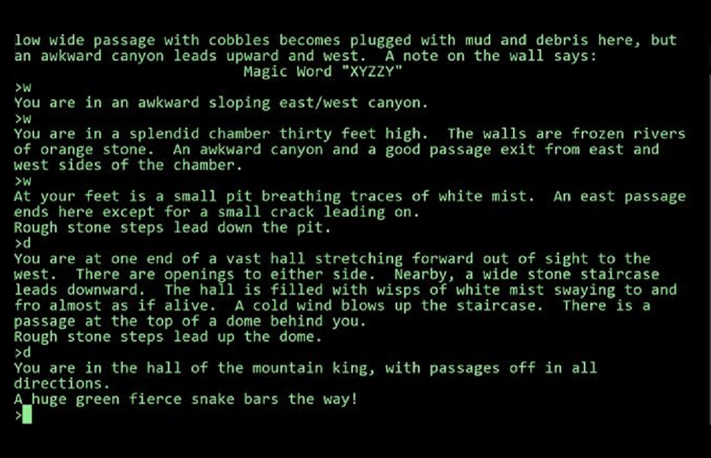
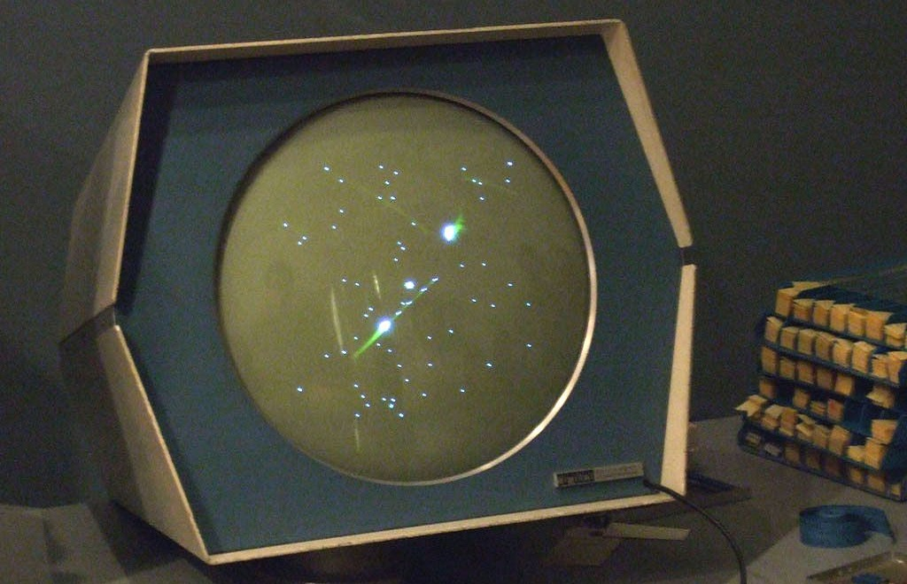
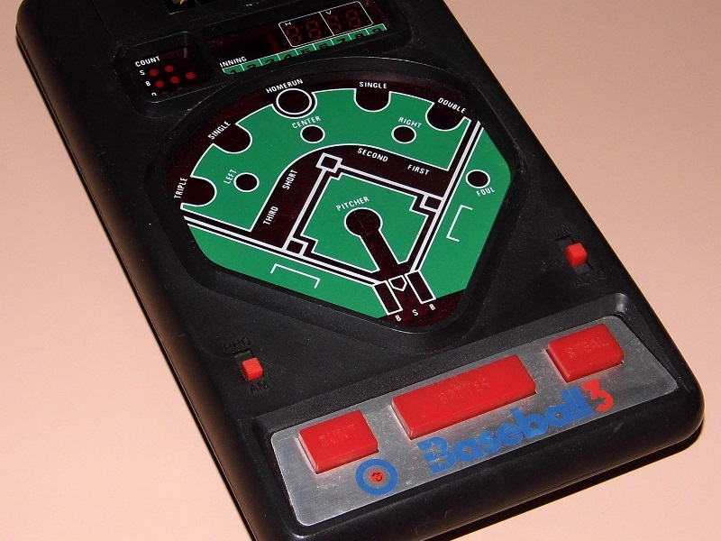
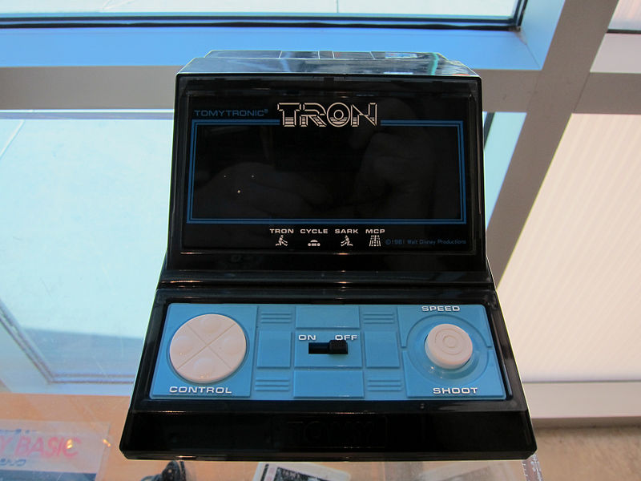
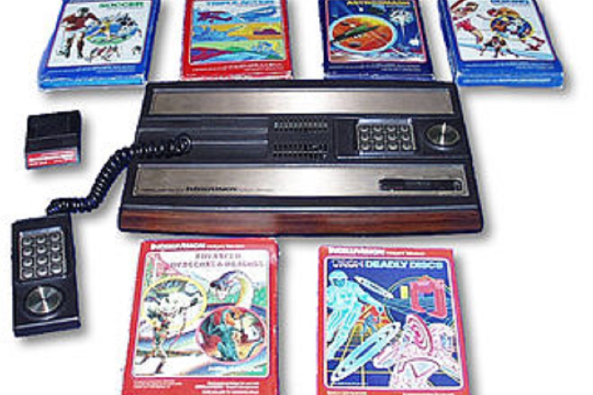
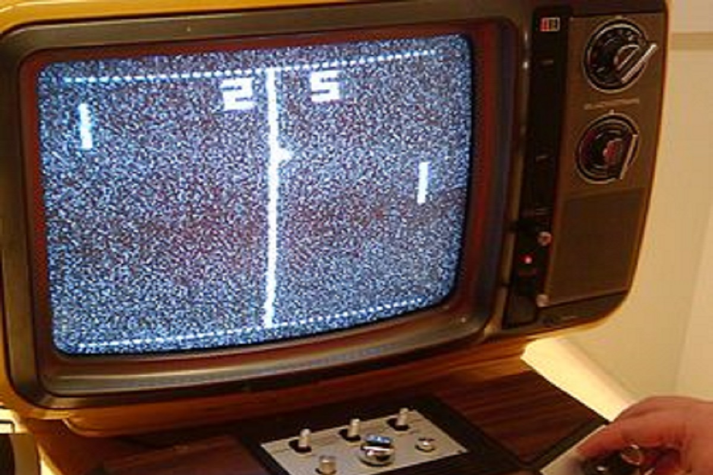
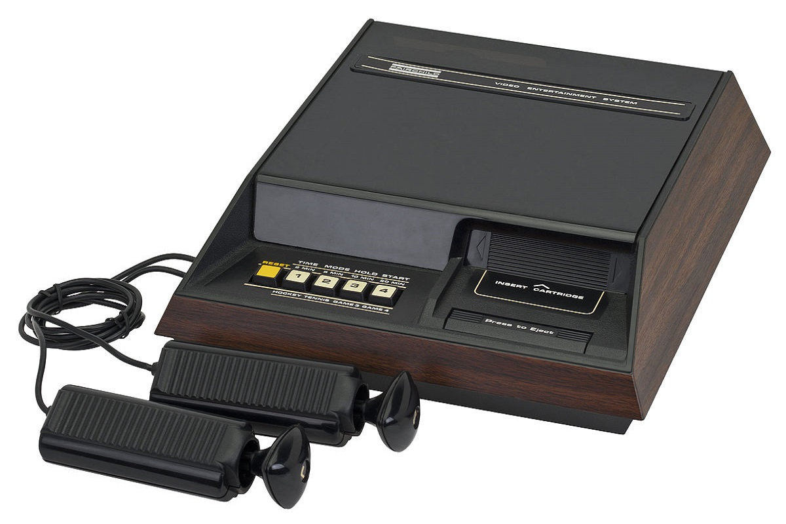

© Andrei Bertescu


 printați
printați
+40 725 099 253 |
andrei.bertescu2@gmail.com |
Anii 1948-1980
În anii 1960, au fost create o serie de jocuri pe computer pentru sisteme mainframe și minicomputer, dar acestea nu au reușit să atingă o distribuție largă din cauza deficitului continuu a resurselor computerului, a lipsei de programatori suficient de pregătiți și interesați în realizarea de produse de divertisment, dar și a dificultății de transfer. Până la sfârșitul anilor 1970 însă, situația se schimbase drastic. Limbajele de programare de nivel înalt BASIC și C au fost adoptate pe scară largă în timpul deceniului, ele fiind mai accesibile decât limbajele mai tehnice anterioare, cum ar fi FORTRAN și COBOL, deschizând crearea de jocuri pe computer pentru o bază mai mare de utilizatori. Odată cu apariția conceptului de time-sharing, care a permis ca resursele unui singur mainframe să fie repartizate între mai mulți utilizatori conectați la mașină prin terminale, accesul la computer nu a mai fost limitat la o mână de persoane dintr-o instituție, creând mai multe oportunități pentru studenți. pentru a-și crea propriile jocuri.
Primele jocuri video arcade și console personale
Începutul industriei moderne a jocurilor video a apărut ca urmare a dezvoltării concomitente a primului joc video arcade și a primei console de jocuri video pentru acasă la începutul anilor 1970 în Statele Unite.
Industria jocurilor video arcade a crescut din industria jocurilor arcade preexistentă, care anterior a fost dominată de jocuri electro-mecanice (jocuri EM). După sosirea jocului EM de la Sega, Periscope (1966), industria arcade a experimentat o „renaștere tehnologică” condusă de jocurile EM „audio-vizuale”, stabilind jocurile arcade ca un mediu sănătos pentru introducerea jocurilor video comerciale la începutul anului 1970.
În 1966, în timp ce lucra la Sanders Associates, Ralph Baer a venit cu o idee pentru un dispozitiv de divertisment care ar putea fi conectat la un monitor de televizor. Prezentând acest lucru superiorilor săi de la Sanders și obținând aprobarea acestora, el, împreună cu William Harrison și William Rusch, au rafinat conceptul lui Baer în prototipul „Brown Box” al unei console de jocuri video de acasă care ar putea juca un simplu joc de tenis de masă. Cei trei au brevetat tehnologia, iar Sanders, care nu era în domeniul comercializării, a vândut licențe pentru brevete către Magnavox pentru a le comercializa. Cu ajutorul lui Baer, Magnavox a dezvoltat Magnavox Odyssey, prima consolă comercială personală, în 1972.
|  |  |
Primele jocuri portabile de tipul LED/VFD/LCD
Jocurile electronice portabile, folosind toate componentele computerizate, dar de obicei folosind lumini LED sau VFD pentru afișare, au apărut pentru prima dată la începutul anilor 1970. Ecranele LCD au devenit ieftine pentru produsele de larg consum până la mijlocul anilor 1970 și au înlocuit LED-urile și VFD-urile în astfel de jocuri, datorită consumului de energie mai scăzut și dimensiunii mai mici. Majoritatea acestor console au fost limitate la un singur joc datorită simplității afișajului. Companii precum Mattel Electronics, Coleco, Entex Industries, Bandai și Tomy au realizat numeroase jocuri electronice în anii 1970 și începutul anilor 1980.
În 1980, Nintendo a lansat primul din linia sa Game & Watch, jocuri electronice portabile care folosesc ecrane LCD. Game & Watch a determinat zeci de alte companii de jocuri și jucării să-și creeze propriile jocuri portabile, multe dintre acestea fiind copii ale acestor jocurilor sau adaptări ale jocurilor arcade populare. Tiger Electronics a împrumutat acest concept de jocuri video cu dispozitive portabile ieftine și accesibile și încă produce jocuri în acest model până în prezent.
|  |  |
Introducerea consolelor de acasă bazate pe cartușe
Fairchild Channel F de Fairchild Camera and Instrument a fost lansată în 1976. Este prima consolă personală care folosește cartușe ROM programabile - permițând jucătorilor să schimbe jocuri - și este prima consolă de acasă care folosește un microprocesor care citește instrucțiunile din ROM. cartuş. Atari și Magnavox au urmat exemplul în 1977, odată cu lansarea Atari Video Computer System (VCS, cunoscut mai târziu ca Atari 2600) și Magnavox Odyssey 2, ambele sisteme introducând și utilizarea cartuşelor. Pentru a finaliza rapid Atari VCS, Bushnell a vândut Atari către Warner Communications pentru 28 de milioane de dolari, oferind infuzia de numerar necesară pentru a finaliza proiectarea sistemului până la sfârșitul anului 1977. Piața inițială pentru aceste noi console a fost inițial modestă, deoarece consumatorii erau încă precauți după saturația consolelor dedicate de acasă. Cu toate acestea, a existat un nou interes pentru jocurile video și noi jucători au fost atrași de piață, cum ar fi Mattel Electronics cu Intellivision. Spre deosebire de consolele Pong dedicate, consolele bazate pe cartușe programabile au avut o barieră mai mare de intrare cu costurile de cercetare, dezvoltare și producție pe scară largă, mai puțini producători intrând pe piață în această perioadă.
Dominația Atari pe piață a fost contestată de ColecoVision de la Coleco în 1982. Așa cum făcuse Space Invaders pentru Atari VCS, Coleco a dezvoltat o versiune licențiată a hitului arcade de la Nintendo, Donkey Kong, ca un joc la pachet cu sistemul. În timp ce Colecovision a vândut doar 4 milioane de console în timpul vieții sale, comparativ cu cele 30 de milioane ale Atari VCS, apariția sa în 1982 a zguduit Atari și a pregătit scena pentru ca compania să facă o serie de pași greșiți care au dus la prăbușirea jocurilor video din 1983.
|  |  |  |
Câteva jocuri din această perioadă au fost considerate repere în istoria jocurilor video și unele dintre cele mai vechi din genurile populare. Aventura lui Robinett a fost inspirată din aventura textului Colossal Cave Adventure și este considerat primul joc de aventură grafică și primul joc de acțiune-aventura și primul joc de fantezie pentru consolă. Jocul de la Activision, Pitfall!, pe lângă faptul că este unul dintre cele mai de succes jocuri de la dezvoltatori independenți, a stabilit și fundația jocurilor cu platformă cu derulare laterală. Utopia de la Intellivision este primul joc de construire a unui oraș și este considerat unul dintre primele jocuri de strategie în timp real.